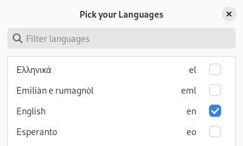
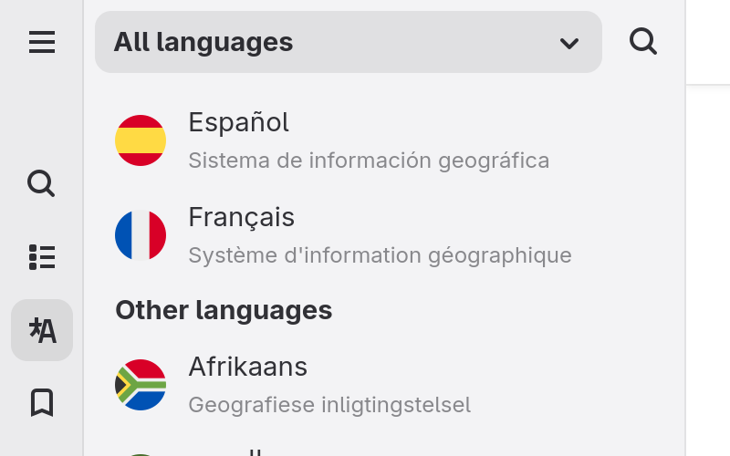

Multiple Languages
Wike supports searching and reading articles in more than 300 languages.

Select the languages you want to make available for searching and reading articles.

Press the search settings button to choose the active language.

You can view an article in other languages by clicking the languages button in the sidebar.